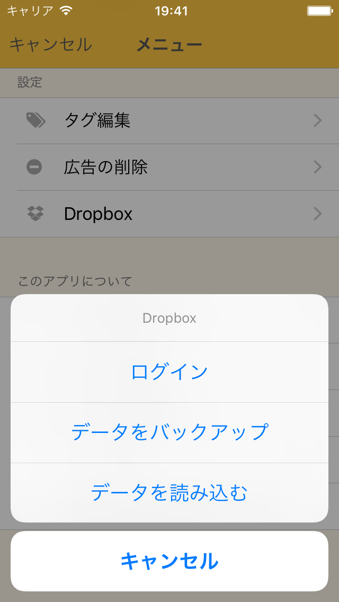

Dropbox バックアップ画面

- とても簡単にDropboxにデータをバックアップできます！
- まずはDropboxでアカウントを作成して下さい。
- メニュー画面の「 Dropbox」をタップして、「ログイン」を選択して下さい。
- ログイン後、「データをバックアップ」をタップして進むとこれだけでDropboxにデータがバックアップされます。
- この時データは「Dropbox ＞ アプリ ＞ moneybook_app ＞ server.realm」にあり、さらにバックアップするとこのデータが上書き保存されていきます。
- 「データを読み込む」をタップすればバックアップしたデータがアプリに統合されます！
- ぜひ定期的にバックアップをとることをおすすめします。